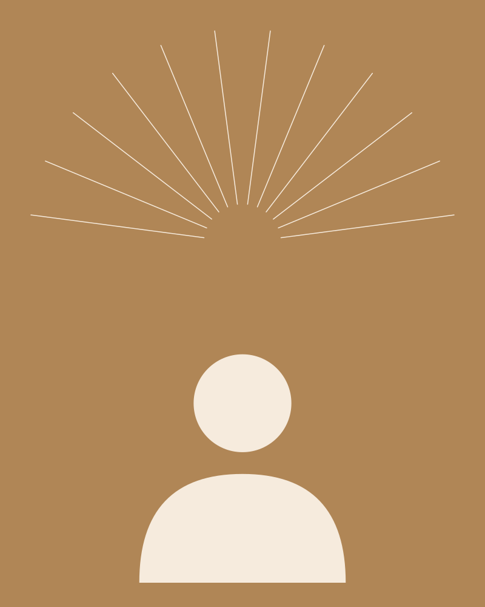

Sora, "gökyüzü" demek.

Sora Coffee'yi Yasin Nalbant açtı. İstediğimiz şey basitti: Bucak'ta öğrencilerin ve herkesin rahatça oturabileceği, kahvesi iyi, geç saate kadar açık bir yer.
Okulun hemen yanına açtık, çünkü gün boyu ders çalışacak, arada nefes alacak bir yer lazımdı. Kahveyi tezgahta biz hazırlıyoruz. San Sebastian'ı kendimiz yapıyoruz. Diğer tatlılar her gün taze geliyor.
Bio'muzda yazdığı gibi: gökyüzüne bir kahve kadar yakın.
Gelin, tanışalım.